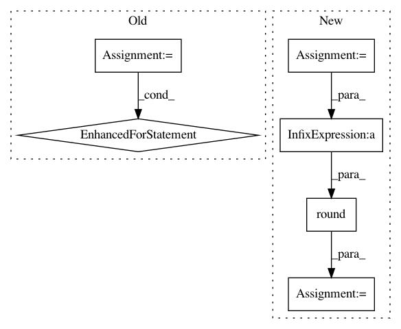

ee689fc16902074b07ab5342a66c66f732850965,dipy/reconst/shore.py,,SHOREmatrix_pdf,#Any#Any#Any#,376
Before Change
psi = np.zeros(
(r.shape[0], (radial_order + 1) * ((radial_order + 1) / 2) * (2 * radial_order + 1)))
counter = 0
for n in range(radial_order + 1):
for l in range(0, n + 1, 2):
for m in range(-l, l + 1):
psi[:, counter] = real_sph_harm(m, l, theta, phi) * \
genlaguerre(n - l, l + 0.5)(4 * np.pi ** 2 * zeta * r ** 2 ) *\
np.exp(-2 * np.pi ** 2 * zeta * r ** 2) *\
__kappa_pdf(zeta, n, l) *\
(4 * np.pi ** 2 * zeta * r ** 2) ** (l / 2) * \
(-1) ** (n - l / 2)
counter += 1
return psi[:, 0:counter]
def __kappa_pdf(zeta, n, l):
After Change
r, theta, phi = cart2sphere(rtab[:, 0], rtab[:, 1], rtab[:, 2])
theta[np.isnan(theta)] = 0
F=radial_order/2
n_c= np.round(1/6.0 * (F+1) *(F+2)* (4*F+3))
psi = np.zeros((r.shape[0], n_c))
counter = 0
for l in range(0, radial_order+ 1, 2):
for p in range((radial_order-l)/2 +1):
In pattern: SUPERPATTERN
Frequency: 3
Non-data size: 6
Instances
Project Name: nipy/dipy
Commit Name: ee689fc16902074b07ab5342a66c66f732850965
Time: 2013-12-13
Author: mauro.zucchelli88@gmail.com
File Name: dipy/reconst/shore.py
Class Name:
Method Name: SHOREmatrix_pdf
Project Name: Microsoft/nni
Commit Name: 3b60f1157530b1e6610f92766358bf0cf05a86d0
Time: 2019-08-12
Author: suiguoxin@gmail.com
File Name: src/sdk/pynni/nni/metis_tuner/metis_tuner.py
Class Name: MetisTuner
Method Name: update_search_space
Project Name: Microsoft/nni
Commit Name: 19173aa4370e36cba96ee7049eaaa0dceda5007c
Time: 2019-08-14
Author: suiguoxin@gmail.com
File Name: src/sdk/pynni/nni/metis_tuner/metis_tuner.py
Class Name: MetisTuner
Method Name: update_search_space